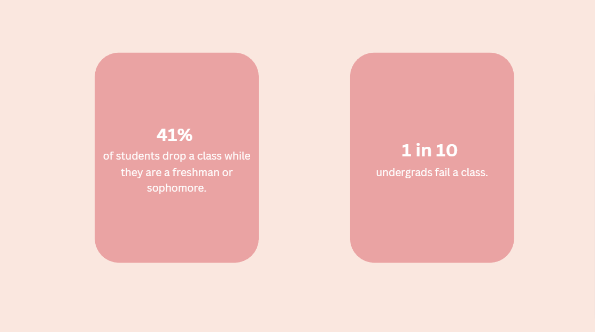
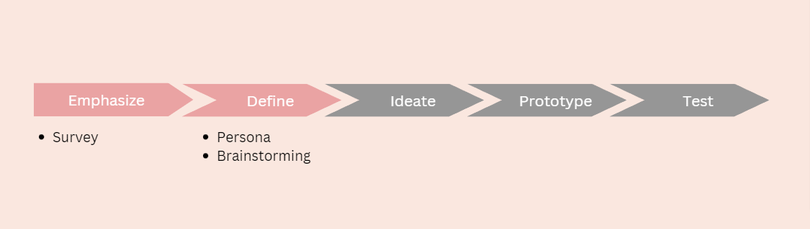
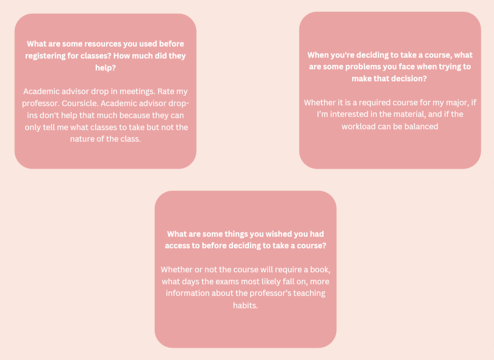

Project type
Personal project
Deliverable
Website mockups
Tools
Miro
Figma
Duration
Currently in progress

Personal project
Website mockups
Miro
Figma
Currently in progress
Many students face uncertainty when registering for classes, unsure of what to expect from a course and risk wasting time, money, and effort. This can be especially challenging for undecided students who are under pressure to secure a co-op on time.
How might we better prepare student for courses they take in the near future?
I'm using design process thinking for this project. Right now i'm still in the process of redefining my problem statement.
I administered a survey with open-ended questions to gather in-depth insights into participants' level of preparation before taking a course. The survey yielded 25 responses from a diverse group of 10 schools. Here are some of the response I recieve from the survey I conducted:
I'm in the process of creating a persona that centers around the ideal user who would utilize this website. I'm also brainstorming ways to structure my wireframes and outlining the ideal user journey from the moment they arrive on the site.